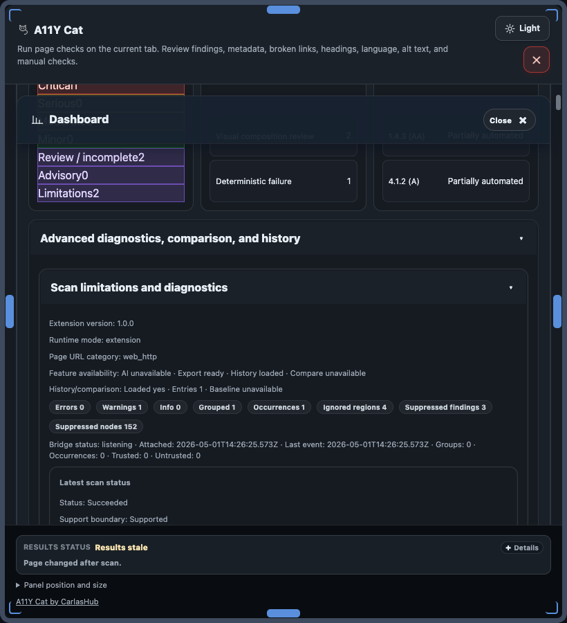

Diagnostics
Diagnostics and limitations
Diagnostics provide structured runtime signals and limitation context for troubleshooting scan coverage.

Runtime signals
Diagnostics are structured runtime signals from the extension scan flow. They are not a complete browser DevTools log and may miss pre-attach or protected-frame events.
Restricted contexts
chrome://, Web Store, and other protected pages can block scanning.file://requires explicit browser file access permission.- Cross-origin and protected frames can be partially or fully inaccessible.
Scan limitations and user action
Limitation output means the scanner could not fully evaluate scope. It is neither a pass nor an automatic fail.
- Read limitation text and diagnostics together.
- Manually test missing states/contexts where authorized.
- Document unresolved coverage constraints in handoff notes.